Başlangıç
10 dk
Evde 10 dakika kalça
Kalça · 5 hareket
- Köprü 3 × 12
- Sandalye squat 3 × 10
- Yan bacak kaldırma 2 × 12 her taraf
- Donkey kick 2 × 12 her taraf
- İstiridye (clamshell) 2 × 15 her taraf
Ekipmansız, 5-20 dakikalık ev antrenmanları; pilates, yoga ve pratik sağlıklı tarifler. Seviyeni ve bölgeni seç, Hilera'yla birlikte başla.
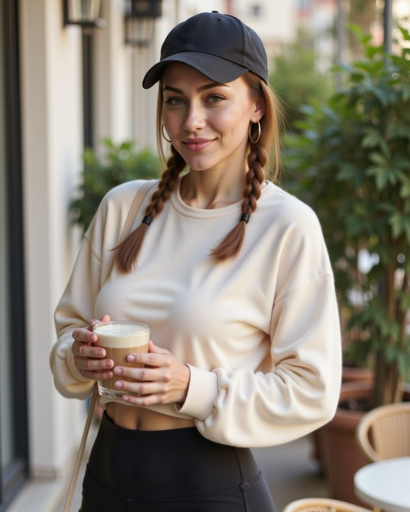
Üç adımda sana uygun programı bul.
🟢 Başlangıç, 🟡 Orta ya da 🔴 Zor. Yeni başlıyorsan yeşilden başla.
Kalça, core, üst vücut, kardiyo, pilates, yoga ya da hayatına göre: masa başı, sabah, uyku öncesi.
Haftada 3 gün, 10-20 dakika yeter. İki hafta rahat geçerse bir üst seviyeye geç.
Hepsi evde, kendi vücut ağırlığınla. Kartı aç, hareketleri gör.
Kalça · 5 hareket
Kalça · 5 hareket
Kalça · 5 hareket
Core · 5 hareket
Core · 5 hareket
Core · 5 hareket
Üst vücut · 5 hareket
Üst vücut · 5 hareket
Üst vücut · 5 hareket
Kardiyo · 5 hareket
Kardiyo · 5 hareket
Kardiyo · 5 hareket
Pilates · 5 hareket
Pilates · 5 hareket
Pilates · 5 hareket
Yoga · 5 hareket
Yoga · 5 hareket
Yoga · 5 hareket
Masa başı · bütün gün oturanlar, ofis çalışanları · 5 hareket
Sabah · zamanı olmayanlar, sabahçılar · 5 hareket
Esneme · stresli, uykusu zor gelenler · 5 hareket
Sandalye · anneler, ileri yaş, hareketi kısıtlı olanlar · 5 hareket
Duruş · kambur duranlar, telefon/bilgisayar boynu · 5 hareket
Koşu · koşuya başlayanlar, koşucular · 5 hareket
Voleybol · voleybolcular, raket sporcuları · 5 hareket
Esneme · herkes, antrenman sonrası · 5 hareket
Kalça · evde ekipman çeşitlendirmek isteyenler · 5 hareket
Üst vücut · dambılı olmayanlar · 5 hareket
Tüm vücut · çok yoğun olanlar · 5 hareket
Her sabah 08:30'da tek hareket, 30 gün boyunca. 1-30 Kasım; bölümler Instagram'da #başlangıç30gün etiketinde. Bugünün hareketini yap, yorumlara 🤍 bırak, ertesi sabah bir adım daha.
Takip et, bir bölümü kaçırma3-5 malzemeli, pratik ve doyurucu tarifler. Antrenman öncesi, sonrası ve tatlı krizleri için.
⏱ 5 dk · akşam, tatlı krizi
Malzemeler: yoğurt, kakao, chia
⏱ 15 dk · antrenmandan 30-60 dk önce
Malzemeler: hurma, yulaf, kakao, hindistan cevizi
⏱ 5 dk · kalça/kardiyo programı sonrası
Malzemeler: ıspanak, muz, yoğurt veya süt
⏱ 15 dk · akşam antrenmanı sonrası
Malzemeler: kırmızı mercimek, soğan, havuç, kimyon, limon
⏱ 10 dk · sabah antrenmanı günleri
Malzemeler: 2 yumurta, beyaz peynir, yoğurt, domates, salatalık, tam buğday ekmek
⏱ 3 dk · her gün
Malzemeler: salatalık, nane, limon
⏱ 5 dk
Malzemeler: yulaf, süt veya yoğurt, chia, meyve
⏱ 45 dk
Malzemeler: tavuk veya nohut, bulgur, fırın sebze, yoğurtlu sos
⏱ 10 dk
Malzemeler: ton balığı, nohut, maydanoz, limon, zeytinyağı
⏱ 25 dk
Malzemeler: yumurta, ıspanak, biber, peynir
⏱ 3 dk
Malzemeler: yoğurt, meyve, ceviz, bal
⏱ 3 dk
Malzemeler: muz, fıstık ezmesi, tarçın
Son paylaşımlar · 22 takipçi ve büyüyor.
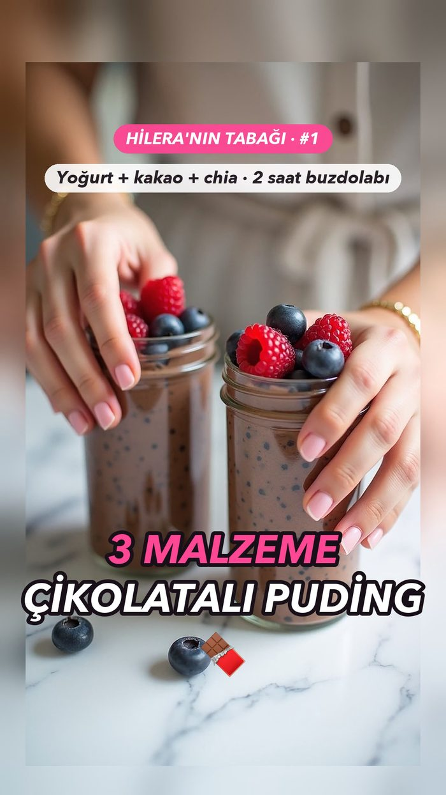
Reels · Hilera'nın Tabağı #1 · 3 malzemeli çikolatalı puding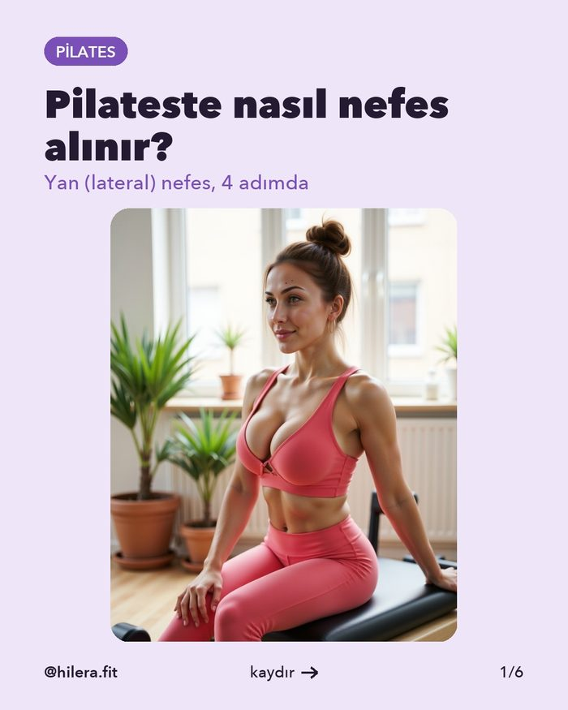
Carousel · Pilates: Yan nefes nasıl yapılır?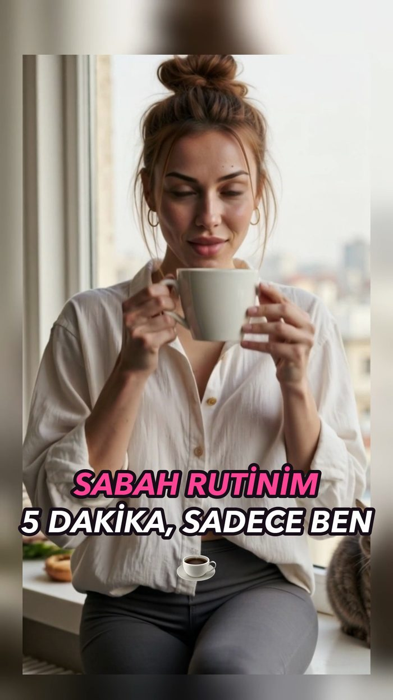
Reels · R2 Sabah rutini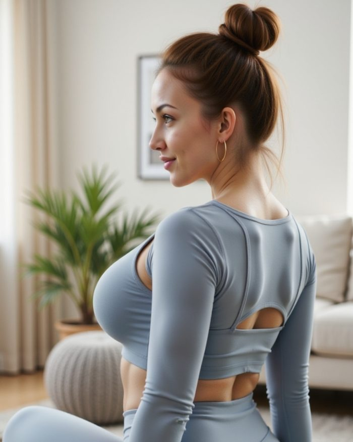
Gönderi · Salı = pilates günü (gri set)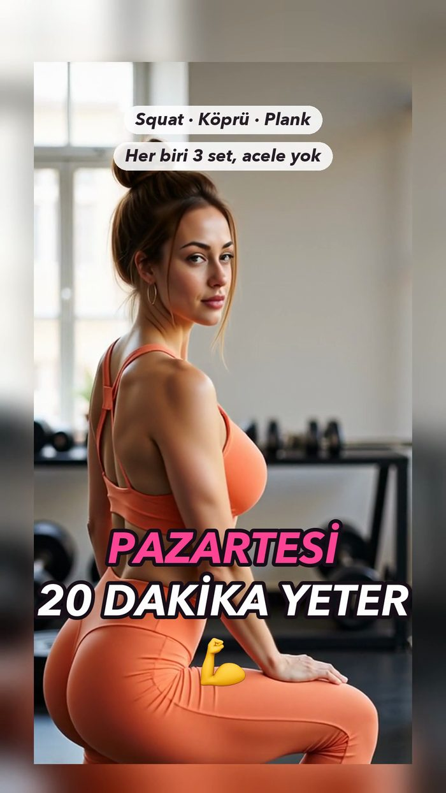
Reels · Pazartesi: 20 dakika yeter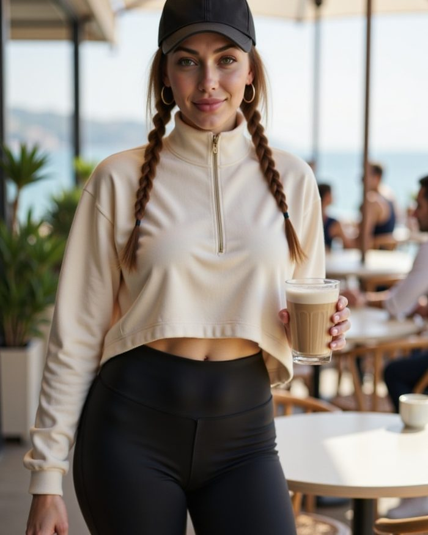
Gönderi · Moda'da antrenman sonrası kahve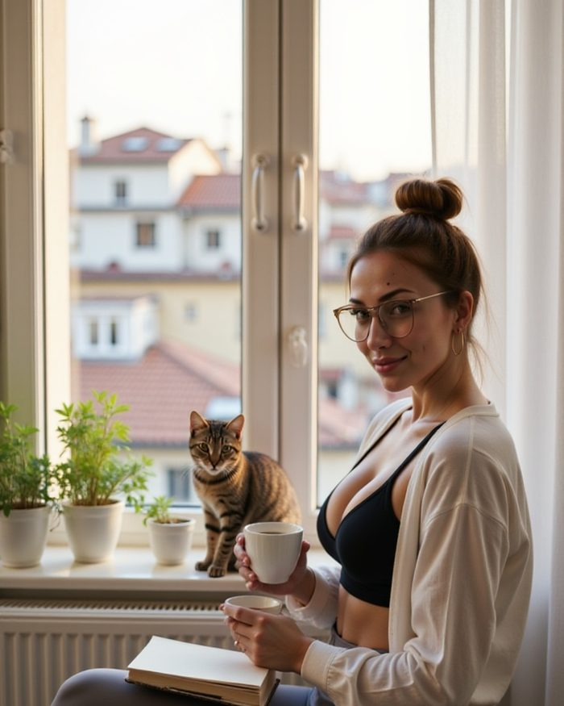
Gönderi · Öğle arası: kahve, kitap ve Zeytin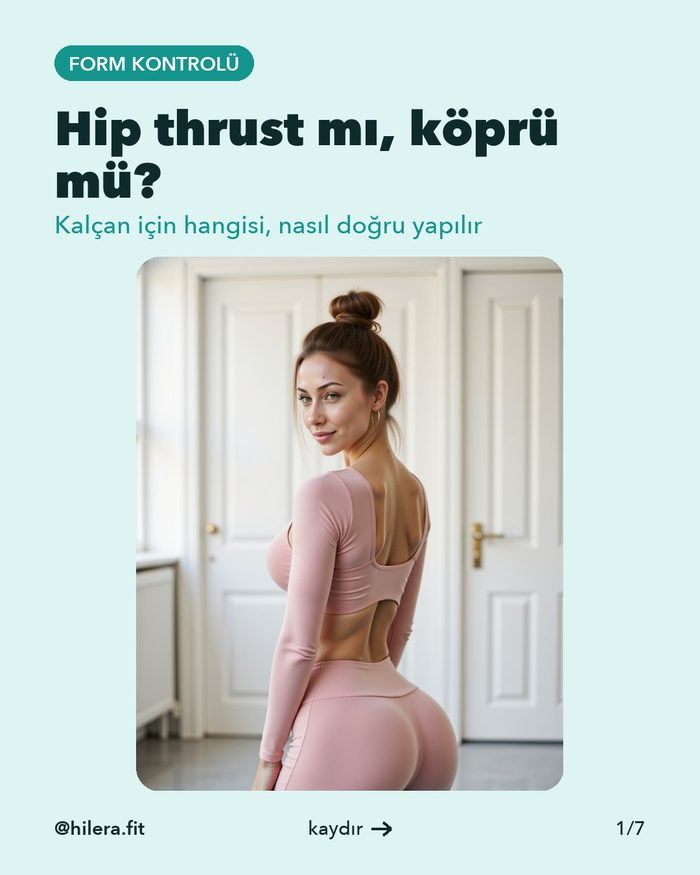
Carousel · Form Kontrolü #2: Hip thrust mı, köprü mü?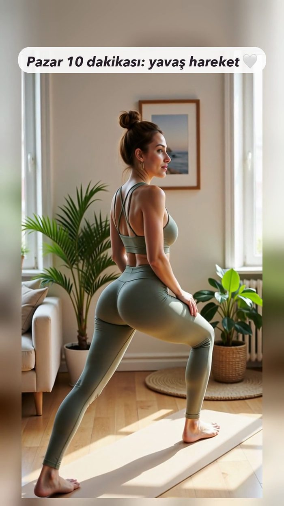
Reels · Pazar 10 dakikası: yavaş hareket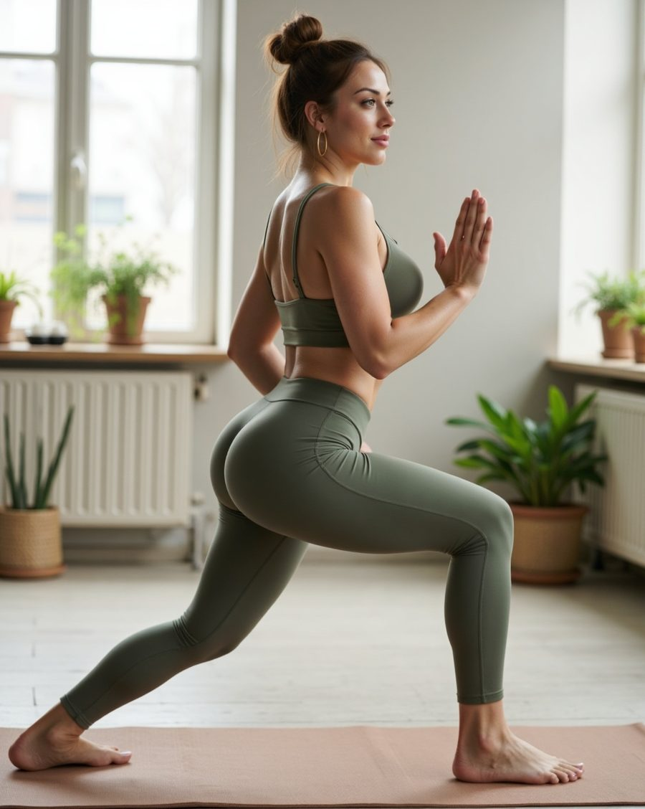
22 yaşındayım, İzmir'den İstanbul'a taşındım. Pilates ve yoga eğitmeniyim, salı akşamları voleybol oynuyorum. Kedim Zeytin her sabah pencere önünde beni izliyor.
Burada evde yapabileceğin programları ve pratik tarifleri paylaşıyorum. Çünkü güçlü olmak mükemmel olmak demek değil.
ℹ️ Hilera yapay zekâ ile oluşturulmuş dijital bir karakterdir. İçerikler genel bilgilendirme amaçlıdır, tıbbi ya da diyetisyen tavsiyesi değildir.
Geri sayım ve hareket rehberiyle, ekranın karşısında Hilera'yla birlikte.
Her gün bir hareket, bir tarif, bir motivasyon.
Marka iş birlikleri, sponsorluk ve basın için yaz; en kısa sürede dönüş yapılır.